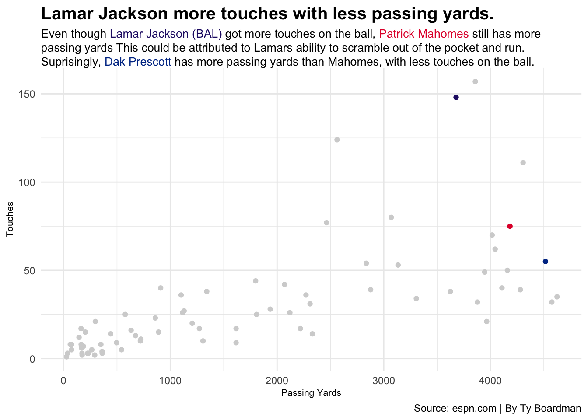
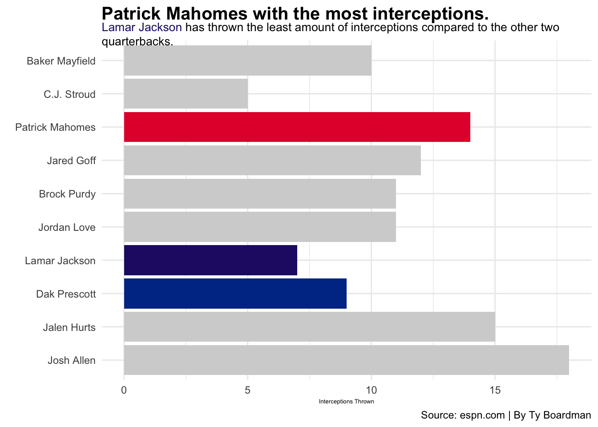

Patrick Mahomes vs Lamar Jackson in the 2023 season.
Patrick Mahomes and Lamar Jackson are some of the best quarterbacks in the NFL right now, but they have very different playing styles. Mahomes is a pocket passer with little speed when he wants to run and a massive arm to throw the deep ball. On the other hand, Jackson can scramble and run but doesn’t have the huge, magnificent arm that Mahomes might have.
I wanted to compare the two quarterbacks to see how similar they may be. Lamar Jackson and Patrick Mahomes have had two MVPs throughout their careers, the most recent being the 2023 MVP Lamar Jackson. Both respected quarterbacks are top favorites yearly and will be in the league yearly.
Lamar Jackson had a phenomenal season with 67.2% of his passes completed for 3,678 yards, 24 touchdowns, and just seven interceptions; Jackson has one of his best seasons passing in 2023. His ability to push the ball downfield was demonstrated by his 8.0 yards per attempt. This 13-4 record for the Ravens is complemented by Jackson’s passer rating of 102.7. Lamar is often considered a runner, but he demonstrated last season that he could pass the ball and run to be a successful NFL quarterback.
On the other hand, Patrick Mahomes had 4,183 passing yards, 27 touchdowns, and a career-high 14 interceptions. However, his season was marginally less effective than his high expectations. He also had a 67.2% completion rate, although his 92.6 quarterback rating and 7.0 yards per attempt showed irregularities, in part because of his receiving corps’ dropped passes.
Let’s compare their passing stats in 2023. For the fun of it, we will include Dak Prescott as well.
Code
library(tidyverse)library(ggrepel)library(ggbeeswarm)library(ggalt)library(ggtext)library(gt)library(waffle)QB_season <-read_csv("QB_season.csv") Patrick <- QB_season |>filter(PlayerName =="Patrick Mahomes")Lamar <- QB_season |>filter(PlayerName =="Lamar Jackson")Prescott <- QB_season |>filter(PlayerName =="Dak Prescott")ggplot() +geom_point(data=QB_season, aes(x=PassingYDS, y=Touches), color="lightgrey") +geom_point(data=Patrick, aes(x=PassingYDS, y=Touches), color="#E31837") +geom_point(data=Lamar, aes(x=PassingYDS, y=Touches), color="#241773") +geom_point(data=Prescott, aes(x=PassingYDS, y=Touches), color="#003594") +theme_minimal() +labs(title ="Lamar Jackson more touches with less passing yards.",x ="Passing Yards",y="Touches", caption="Source: espn.com | By Ty Boardman",subtitle ="Even though <span style = 'color:#241773;'>Lamar Jackson (BAL)</span> got more touches on the ball, <span style = 'color:#E31837;'>Patrick Mahomes</span> still has more passing yards This could be attributed to Lamars ability to scramble out of the pocket and run. Suprisingly, <span style = 'color:#003594;'>Dak Prescott</span> has more passing yards than Mahomes, with less touches on the ball." ) +theme(plot.subtitle =element_textbox_simple(size =10),plot.title =element_text(size =15, face ="bold"),axis.title =element_text(size =8) )

Code
QB_season <-read_csv("QB_season.csv")Patrick <- QB_season |>filter(PlayerName =="Patrick Mahomes")Lamar <- QB_season |>filter(PlayerName =="Lamar Jackson")Prescott <- QB_season |>filter(PlayerName =="Dak Prescott")regionalnu <- QB_season |>filter(Rank <=10)ggplot() +geom_bar(data=regionalnu, aes(x=reorder(PlayerName, Rank), weight=PassingInt), fill="lightgrey") +geom_bar(data=Patrick, aes(x=reorder(PlayerName, Rank), weight=PassingInt), fill="#E41C38") +geom_bar(data=Lamar, aes(x=reorder(PlayerName, Rank), weight=PassingInt), fill="#241773") +geom_bar(data=Prescott, aes(x=reorder(PlayerName, Rank), weight=PassingInt), fill="#003594") +theme_minimal() +coord_flip() +labs(title="Patrick Mahomes with the most interceptions.", subtitle ="<span style='color:#241773;'>Lamar Jackson</span> has thrown the least amount of interceptions compared to the other two quarterbacks.",x="",y="Interceptions Thrown",caption ="Source: espn.com | By Ty Boardman" ) +theme_minimal() +theme(plot.subtitle =element_textbox_simple(size =10),plot.title =element_text(size =15, face ="bold"),axis.title =element_text(size =5) )

Code
QB_season <-read_csv("QB_season.csv") Patrick <- QB_season |>filter(PlayerName =="Patrick Mahomes")Lamar <- QB_season |>filter(PlayerName =="Lamar Jackson")Prescott <- QB_season |>filter(PlayerName =="Dak Prescott")ggplot() +geom_point(data=QB_season, aes(x=RushingYDS, y=Fum), color="lightgrey") +geom_point(data=Patrick, aes(x=RushingYDS, y=Fum), color="#E31837") +geom_point(data=Lamar, aes(x=RushingYDS, y=Fum), color="#241773") +geom_point(data=Prescott, aes(x=RushingYDS, y=Fum), color="#003594") +scale_x_reverse() +scale_y_reverse() +theme_minimal() +labs(title ="Lamar Jackson with the most fumbles and rushing yards",x ="Rushing Yards",y="Fumbles", caption="Source: espn.com | By Ty Boardman",subtitle ="<span style = 'color:#241773;'>Lamar Jackson (BAL)</span> has the most rushing yards out of the three quarterbacks,but that comes with a price. He has 11 fumbles opposed to <span style = 'color:#E31837;'>Patrick Mahomes</span> 5." ) +theme(plot.subtitle =element_textbox_simple(size =10),plot.title =element_text(size =15, face ="bold"),axis.title =element_text(size =8) )